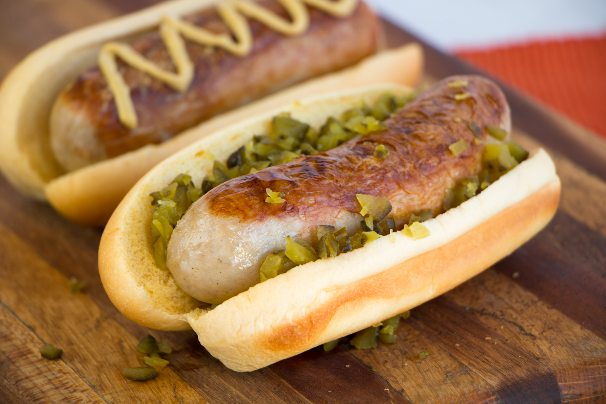
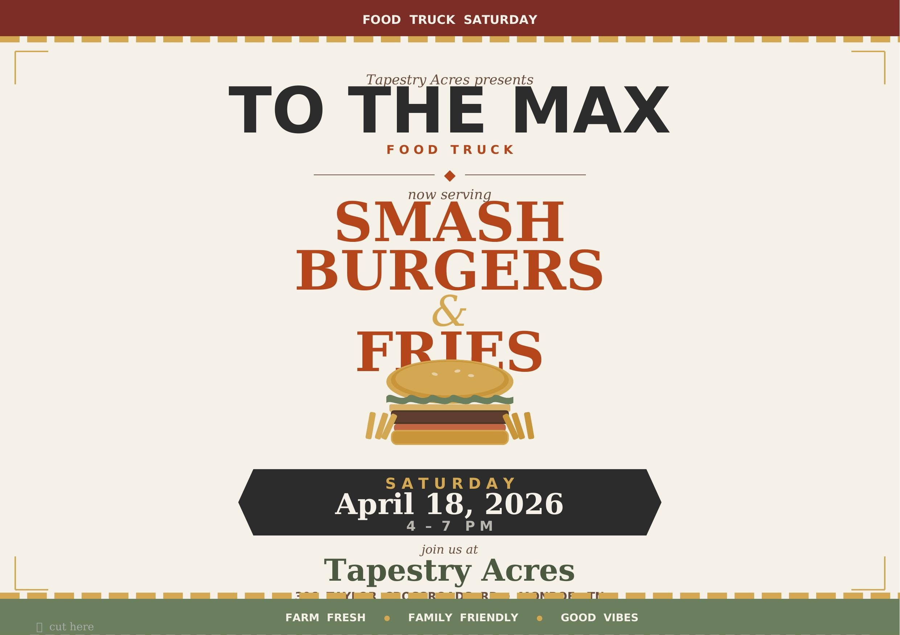
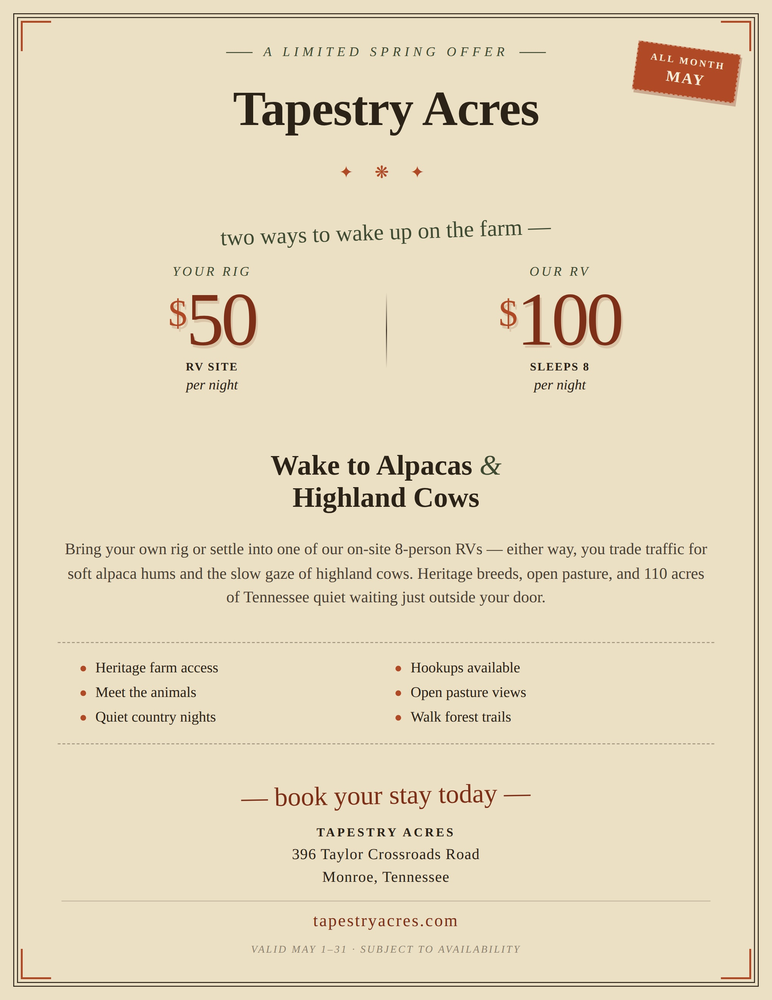
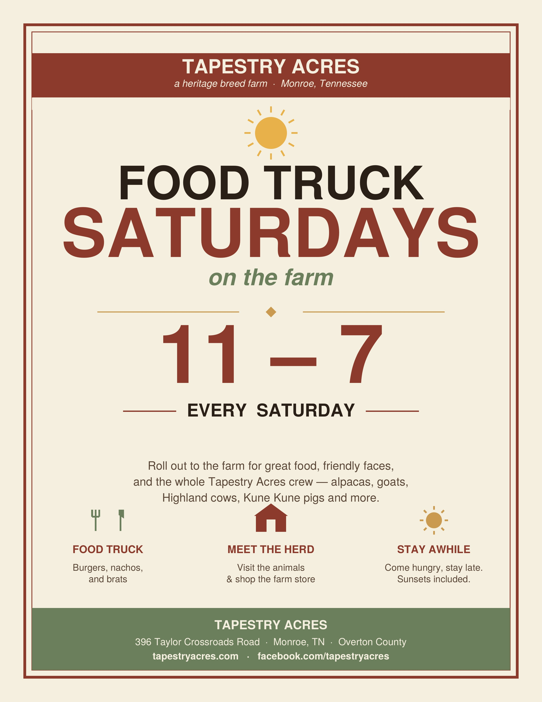
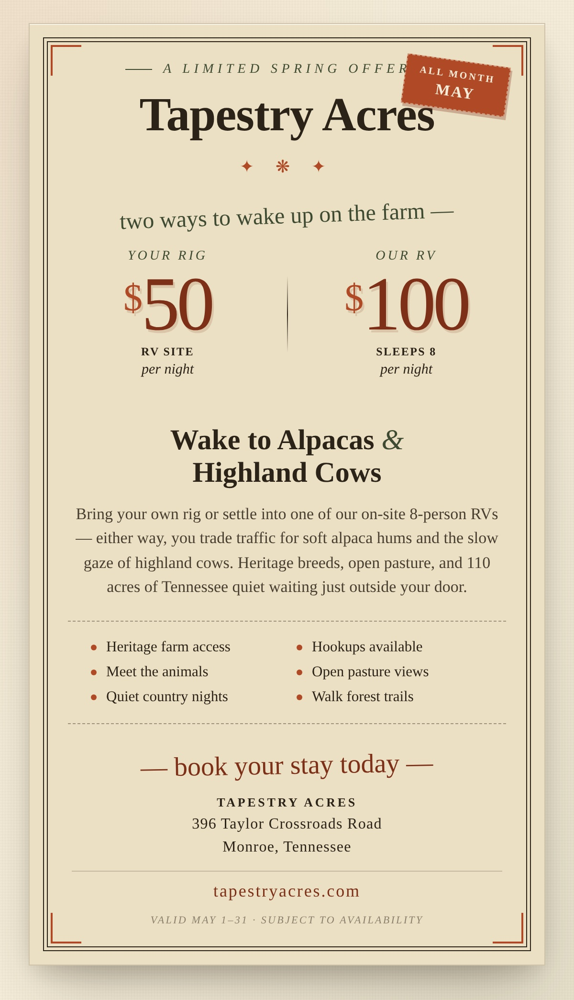

Tapestry Acres
Signage Dashboard
Every sign, ad, and flyer for the farm, gathered in one place for printing and reference.
Property Signs
Animal, pasture, and interpretive signs posted around the farm — plus the printable info-sign text.

Alpacas

Alpaca Fiber

Alpaca Uses

Highland Cattle

Goats

Nigerian Dwarf Goats

KuneKune Pigs

Mules

Murphy

Penelope

The Drylot

Poison Ivy Warning
Animal Feed
$1 each — Alpaca & Goat Feed, Animal Crackers for cows & goats, Chicken Feed. Please feed gently: hands flat. Thank you!
Info signGuest Wi-Fi
Network: Tapestry Acres · Password: maxfield. Scan to connect, or enter manually. tapestryacres.com
Info signAlpaca Rental
$25 for 30 minutes · $40 for 1 hour. Need one longer? Ask our staff about bringing alpacas to your next event.
Info signWalking Your Alpaca — Safe Handling Rules
Approach from the side, keep the lead loose (never around your hand), no pulling, hands off the head/face, no treats from your pocket, stay calm and quiet. If something feels off, stop and bring the alpaca back to staff.
Rules signSorghum — The Roller Mill
Juice-extraction press: the first stop in making sorghum syrup. Heavy iron rollers, traditionally mule-powered, crush the cane and squeeze out the raw green juice. Spent cane (bagasse) is piled aside.
InterpretiveSorghum — The Cooker
The evaporating pan: a long shallow pan over open fire where raw juice becomes golden syrup. The cook skims green foam and reads doneness by how the syrup sheets off a wooden paddle.
InterpretiveLoved Your Visit? Leave a Review
Scan with your phone's camera to leave a Google review. Thank you from the herd — Monroe, Tennessee · woaksyarns.com
Review signAlpaca Walks
Open PDF ↗PDF signAlpaca Parking
Open PDF ↗PDF sign
Ads & Flyers
Food-truck menu ads, promo flyers, and printable handouts.

Smashburger

Bratwurst

Queso

Drinks

Bratwurst (Photo)

Smashburger Flyer

Farm Flyer (Letter)

Food Truck Saturdays

May RV Promo
Smashburger Flyer
Open PDF ↗PDF flyerFarm Flyer (Letter)
Open PDF ↗PDF flyerFood Truck Saturdays
Open PDF ↗PDF flyer